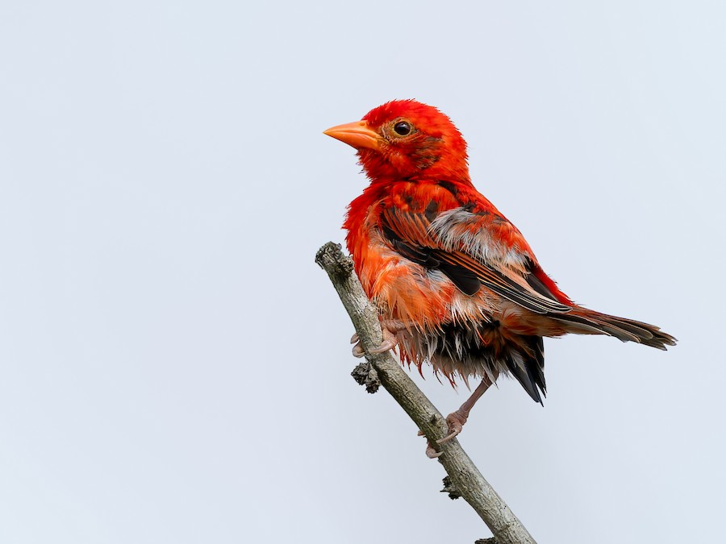
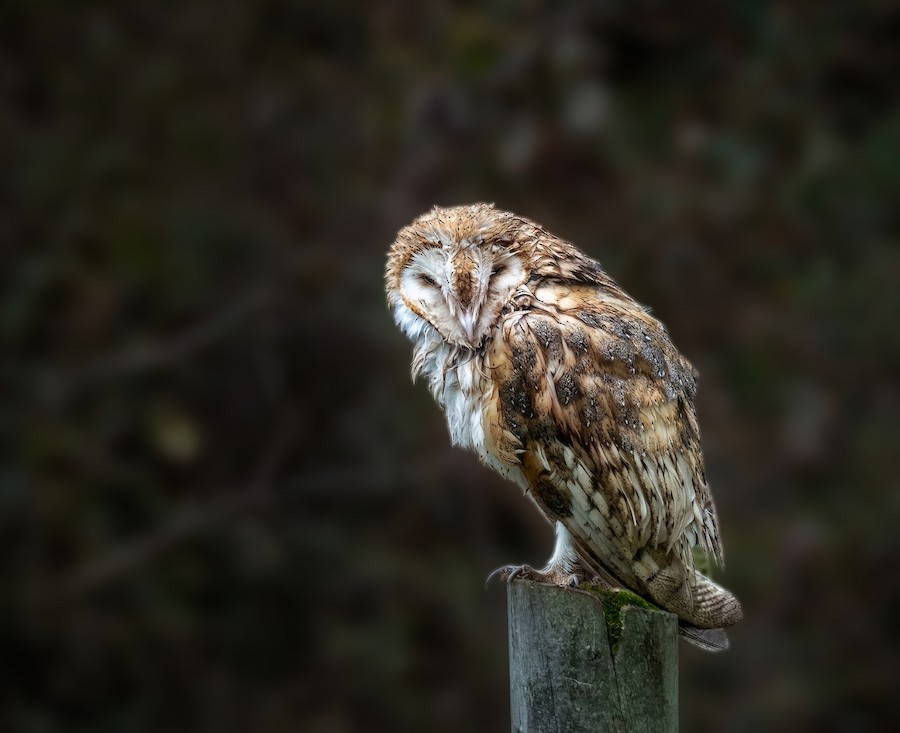
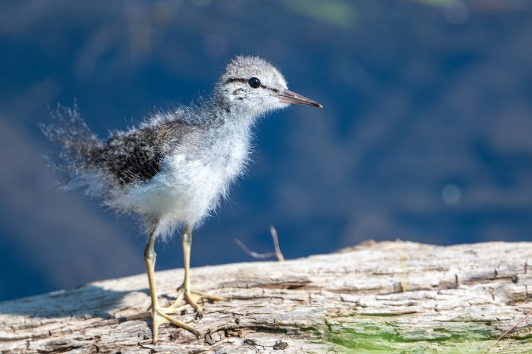
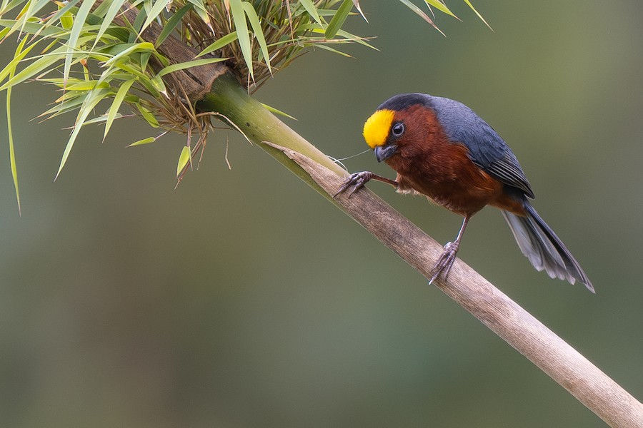

Resumen de la comunidad
Avistamientos
-

Cóndor Andino Ave de presa / Carroñera Cajón del Maipo 14:30 hrs 25/08/2026 Catalina López -

Martín Pescador Ave acuática / Cazadora Humedal de Batuco 17:45 hrs 24/08/2026 Martina Fuenzalida -

Loica Ave paseriforme / Cantora Parque Bicentenario 09:15 hrs 22/08/2026 Catalina López - Tucúquere Rapaz nocturna Reserva Nacional Río Clarillo 20:10 hrs 20/08/2026 Martina Fuenzalida
-

Picaflor Gigante Ave paseriforme / Cantora Farellones 11:20 hrs 18/08/2026 Catalina López